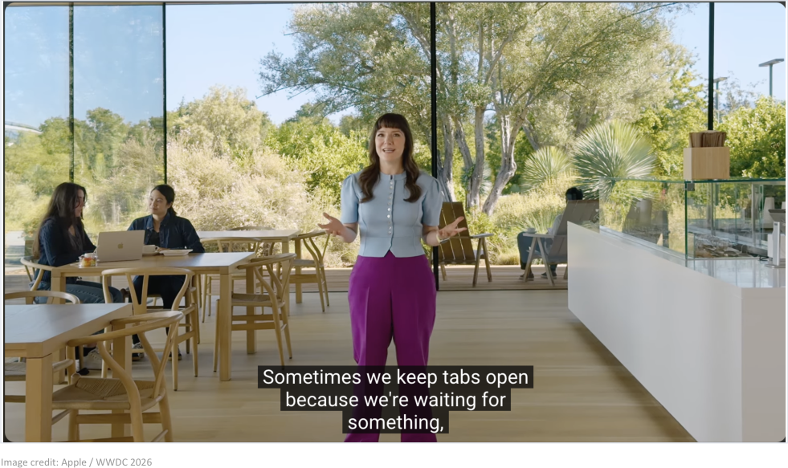
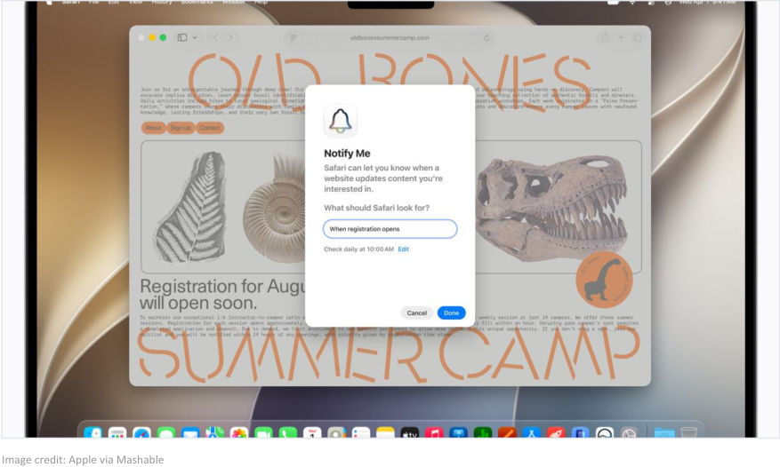
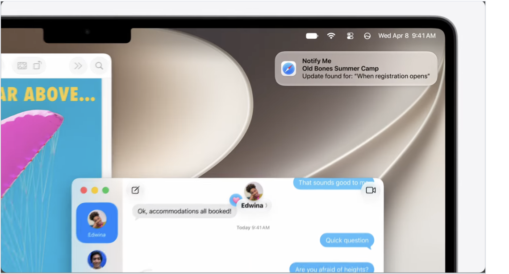

Sometimes we keep tabs open because we’re waiting for something.
Apple opened its Safari segment with the problem. Open tabs are watchlists.

People already pay to stop checking. In a single-day snapshot this spring, 1.87M monitors were active on Visualping. Apple just put the same behavior on the keynote stage.
Apple builds page monitoring into Safari.
Notify Me lets a user name the change they are waiting for and leave Safari to watch the page.
Cadence is confirmed: checks run daily at most, on a set schedule. Still open: where the checks run, page limits, and change history.

The alert becomes the answer.
Safari comes back when the page changes. The return path is now platform territory.

Search answers once. The web keeps changing. Whoever owns the alert owns the return visit.
The query becomes a watchlist.
The user asks once. The agent keeps checking until the page changes.
Search
The user asks for something that is not available yet.
Watch
The agent checks the page-level source.
Notify
The answer appears when the page changes.
ChatGPT Pulse (Sept 2025). Google information agents (May 2026). Safari Notify Me (June 2026). Same pattern, three platforms, nine months.
Unnamed for 23 years. Named and shipped in 20 days.
Two platforms moved inside a month. The behavior is a decade old on the open web.
Primary sources, data, and a person to call.
Search → Watch → Notify diagram. Lineage timeline. Both available as PNG or SVG on request.